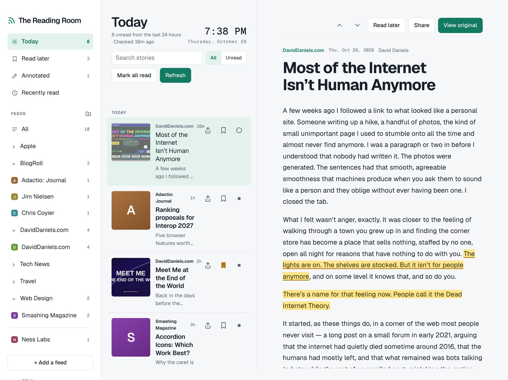
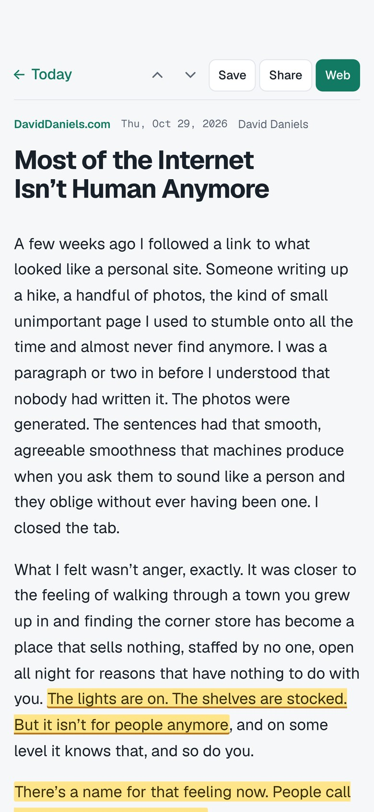
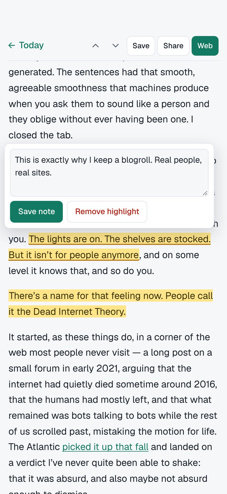

Written by people.
A calm, private RSS reader for Mac, iPhone and iPad. Follow real writers on their own sites, with no algorithm deciding what you see.
Free for iPhone and iPad. The Mac version is on its way. No account, no tracking, no ads.

Why it exists
People are still writing on their own sites, about their own lives, in their own words. They just got harder to find.
The lights are on. The shelves are stocked. But it isn’t for people anymore.
I built The Reading Room to read the ones who are still here. Personal blogs come first. High-volume outlets wait their turn.
A place to read, and nothing else in the way.
People first
People shows just the individuals writing on their own sites, apart from the big publications. Today opens with a morning briefing, their posts up front.
Discover through writers
Find new blogs the old way: through the blogrolls and links of the writers you already read.
Read your way
A clean reader that shows just the article. Choose text size, line width, and light, sepia or dark. Or listen to any story read aloud.
Keep what matters
Highlight passages and add notes. Annotated collects them all, ready to export. Read later and Recently read mean nothing gets lost.
Write back
Reply to a writer by email, in their comments, or on Mastodon or Bluesky, whichever they offer.
Follow anything
Paste a website and it finds the feed. Follow people on Mastodon and Bluesky, YouTube channels and podcasts too. Mute words you’re tired of.


On your Mac, your iPhone and your iPad.
Turn on sync and your feeds, folders, Read later, highlights and notes stay the same everywhere, through a folder in your own iCloud Drive.
No account. No tracking. No ads.
Everything stays on your devices, and in your own iCloud Drive if you turn on sync. The app talks directly to the sites you follow. Read the privacy policy.
New to RSS?
Almost every blog and news site publishes a feed, a simple list of its newest posts. The Reading Room checks the feeds you choose and shows you what’s new, in order. A short guide inside the app walks you through it and suggests a few good people to follow.
Coming from another reader?
Export your subscriptions as an OPML file, then import them here. Your folders come along.